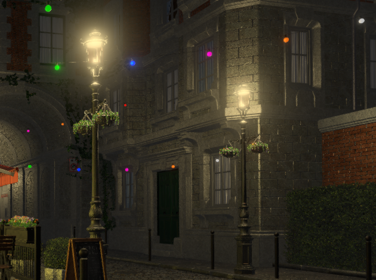
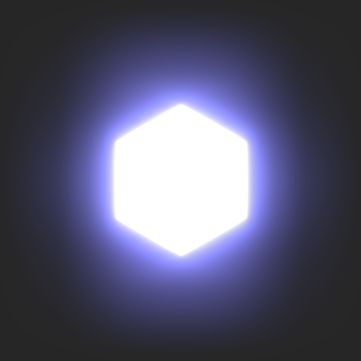

| Bevy Version: | 0.12 | (outdated!) |
|---|
As this page is outdated, please refer to Bevy's official migration guides while reading, to cover the differences: 0.12 to 0.13, 0.13 to 0.14, 0.14 to 0.15, 0.15 to 0.16.
I apologize for the inconvenience. I will update the page as soon as I find the time.
Bloom
The "Bloom" effect creates a glow around bright lights. It is not a physically-accurate effect, though it is inspired by how light looks through a dirty or imperfect lens.
Bloom does a good job of helping the perception of very bright light, especially when outputting HDR to the display hardware is not supported. Your monitor can only display a certain maximum brightness, so Bloom is a common artistic choice to try to convey light intensity brighter than can be displayed.
Bloom looks best with a Tonemapping algorithm that desaturates very bright colors. Bevy's default is a good choice.
Bloom requires HDR mode to be enabled on your camera. Add the
BloomSettings component to the camera to enable
bloom and configure the effect.
use bevy::core_pipeline::bloom::BloomSettings;
commands.spawn((
Camera3dBundle {
camera: Camera {
hdr: true,
..default()
},
..default()
},
BloomSettings::NATURAL,
));Bloom Settings
Bevy offers many parameters to tweak the look of the bloom effect.
The default mode is "energy-conserving", which is closer to how real light physics might behave. It tries to mimic the effect of light scattering, without brightening the image artificially. The effect is more subtle and "natural".
There is also an "additive" mode, which will brighten everything and make it feel like bright lights are "glowing" unnaturally. This sort of effect is quite common in many games, especially older games from the 2000s.
Bevy offers three bloom "presets":
NATURAL: energy-conerving, subtle, natural look.OLD_SCHOOL: "glowy" effect, similar to how older games looked.SCREEN_BLUR: very intense bloom that makes everything look blurred.
You can also create an entirely custom configuration by tweaking all the
parameters in BloomSettings to your taste. Use the
presets for inspiration.
Here are the settings for the Bevy presets:
// NATURAL
BloomSettings {
intensity: 0.15,
low_frequency_boost: 0.7,
low_frequency_boost_curvature: 0.95,
high_pass_frequency: 1.0,
prefilter_settings: BloomPrefilterSettings {
threshold: 0.0,
threshold_softness: 0.0,
},
composite_mode: BloomCompositeMode::EnergyConserving,
};
// OLD_SCHOOL
BloomSettings {
intensity: 0.05,
low_frequency_boost: 0.7,
low_frequency_boost_curvature: 0.95,
high_pass_frequency: 1.0,
prefilter_settings: BloomPrefilterSettings {
threshold: 0.6,
threshold_softness: 0.2,
},
composite_mode: BloomCompositeMode::Additive,
};
// SCREEN_BLUR
BloomSettings {
intensity: 1.0,
low_frequency_boost: 0.0,
low_frequency_boost_curvature: 0.0,
high_pass_frequency: 1.0 / 3.0,
prefilter_settings: BloomPrefilterSettings {
threshold: 0.0,
threshold_softness: 0.0,
},
composite_mode: BloomCompositeMode::EnergyConserving,
};Visualization
Here is an example of Bloom in 3D:

And here is a 2D example:
